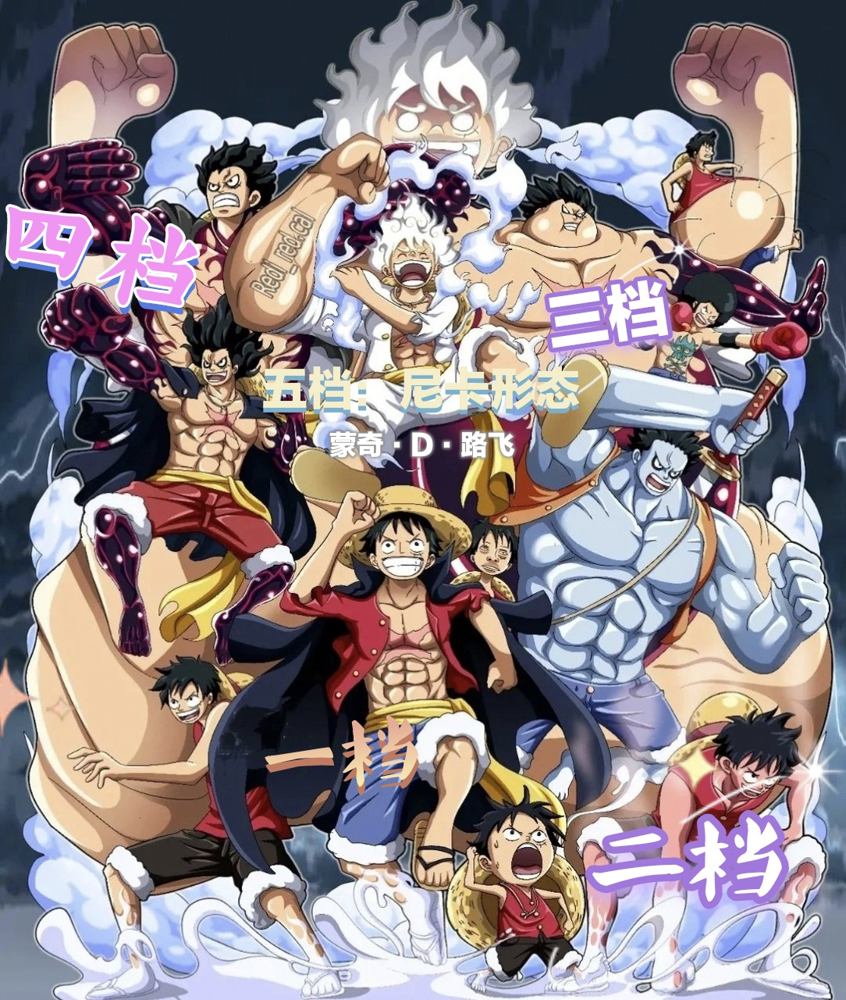

普通形态（Gomu Gomu no Mi）：这是路飞最基本的形态，他的身体可以像橡胶一样伸缩，具有极高的弹性和柔韧性。他可以利用这种能力进行远距离攻击和防御，例如橡胶火箭炮（Gomu Gomu no Bazooka）和橡胶盾（Gomu Gomu no Shield）。
二档（Second Gear）：路飞通过加速自己体内的血液流动来提升速度和力量。这种形态下，他的攻击速度和力量都会显著增强，但会消耗大量的体力。二档状态下的路飞可以发动如橡胶JET火箭炮（Gomu Gomu no Jet Bazooka）等强力招式。
三档（Third Gear）：路飞将空气吹入自己身体的某一部分，使其巨大化，从而获得更大的力量和破坏力。这种形态下，他的攻击范围和力量都会大幅提升，但使用后会暂时缩小成小孩大小，力量大减。三档的代表招式有橡胶巨人之枪（Gomu Gomu no Gigant Gun）。
四档（Fourth Gear）：路飞结合了二档和三档的特点，通过吹气使身体某部分巨大化，并加速血液流动以获得速度和力量。四档状态下，路飞的攻击力和防御力都达到了极高的水平，但使用后会有一段时间无法使用霸气。四档的形态包括“弹跳人”（Sprinter）和“蛇人”（Serpentine）。
尼卡形态（Serpentine）：这是四档的一个变种，路飞在四档的基础上进一步强化，使身体变得更加柔软和灵活，类似于蛇的移动方式。这种形态下，他的攻击更加难以预测，能够进行高速的连续攻击。